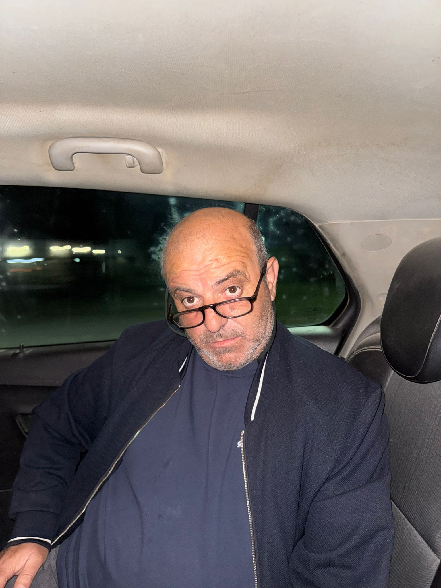

İstanbul Üniversitesi Veteriner Fakültesi
Lisans eğitimine İstanbul Üniversitesi Veteriner Fakültesi'nde başladı.
Veteriner Hekim
Bursa doğumlu olan Olcay Karaman, eğitim hayatından veterinerlik kariyerine ve süt ineği yetiştiriciliğine uzanan yaşamıyla Keşan ve Karasatı Köyü ile güçlü bağlarını sürdüren bir veteriner hekimdir.

Bursa doğumlu olan Olcay Karaman, aslen Keşan ilçesine bağlı Karasatı Köyü nüfusuna kayıtlıdır. İlkokul eğitimini Karasatı Köyü'nde, ortaokulu Paşayiğit Ortaokulu'nda ve lise eğitimini Keşan Lisesi'nde tamamlamıştır.
1993 yılında İstanbul Üniversitesi Veteriner Fakültesi'nde lisans eğitimine başlamış, yüksek lisansını 1998 yılında, doktora eğitimini ise 2006 yılında tamamlamıştır. Üniversite yıllarında profesyonel fotoğrafçılık yaparak kendi eğitim masraflarını karşılamış ve çalışma hayatına erken yaşta adım atmıştır.
Eğitim
Lisans eğitimine İstanbul Üniversitesi Veteriner Fakültesi'nde başladı.
Veteriner hekimlik alanındaki yüksek lisans eğitimini tamamladı.
Akademik gelişimini doktora eğitimiyle ileri bir seviyeye taşıdı.
Mesleki Yolculuk
Lisans eğitiminin ardından yeniden Keşan'a dönerek veterinerlik kariyerine burada başlamıştır. Birkaç yıl boyunca bölgede aktif olarak çalıştıktan sonra doğup büyüdüğü şehirde kendi veteriner kliniğini açmıştır. Mesleği sayesinde sık sık köy ziyaretleri yaptığı dönemde, Keşan'a bağlı Yenimuhacir beldesinden Aysun Altınordu ile tanışmıştır. Çift, 2002 yılının Temmuz ayında evlenmiş; üç yıl sonra ikiz çocukları dünyaya gelmiştir.
Üretim ve Katkı
Daha sonraki yıllarda çocukluk ve gençlik döneminin geçtiği Karasatı Köyü'nde bir çiftlik kurarak süt ineği yetiştiriciliğine yönelmiştir. Veteriner hekimlik bilgisini hayvancılık deneyimiyle birleştirerek bölgedeki üreticilere hem sağlık hem de yetiştiricilik alanında destek sağlamaktadır.